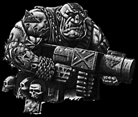

Imperial Forces |
Force Disposition Introduction |
Ork Forces |
|
 The planet Monglor has become a great source of consternation, as a large percentage of the Ogryn population has traitorously rebelled against the Imperium and even now fights fiercely against the Angels of Redemption hastily redirected onto the planet. The one regiment remaining loyal to the cause has been consigned to the battle for Helsreach, where questions of loyalty become secondary in the face of overwhelming invasion. The abhumans seem to be devoted to the Emperor's cause and have exhibited great valour and force of arms, however they will remain under full surveillance indefinitely.
+++ Date: 2542999/M41
+++ Ref: Mon/84225799/SLP
+++ By: Lieutenant Maedae, Blue Platoon, 32nd Noctan Strike Force, Monglor
+++ To: Captain Lurvos, 4th Strike Company, 32nd Noctan Strike Force, Cruiser Hammer of Light
+++ Re: Monglor Ogryn Auxilia
+++ Thought: Ignorance is the best defence.
Captain,
|
| ||||||||||||||||||||||||||||||||||||||||||||||||||
|
I must report the failure of Green platoon to return from their recruitment sweep of the Monglor Auxilia. After missing three consecutive comm-checks, I fear the worst, particularly after experiencing the poor reception we ourselves received by the few tribes our platoon has succeeded in pressing into service. Green platoon left the landing zone at the same time as us, with the intention of recruiting from the southern tribal villages of Dommar, as per your orders. Given the relative close proximity of those settlements, they should have returned before us, so it was with some concern that we returned with our charges and found ourselves alone. Sergeant Adair's joke that Ogryns have eaten the comm links again may well prove to have been in extremely poor taste. We are deploying scouting parties to ascertain the fate of Green platoon, but our own recruits are being loaded onto the shuttles under the direct supervision of Commissar Harte for transport to you on board the Hammer of Light. Whilst I am grateful for the assignment to Monglor, rather than Krourk, I have to report that the attitude of the Ogryns here has greatly changed since my last visit three years ago and it is this, more than anything that has me concerned over the whereabouts of Green platoon. Normally our mere presence has the Ogryn tribes willingly boarding the shuttles to fight once more for our Emperor, but this time their mood was oppressive, dangerous even. If it had not been for the stirring speeches delivered by Commissar Harte, I believe they may well have turned against us. Rumours are running rife through my squads and whilst I understand that an officer of the Noctan should distance himself from such things, the reports I have received have proved intriguing. If you could confirm or deny anything, I would be grateful. There are tales of Orks already on this world, stirring the recruits for the Auxilia against us. There are further stories of an Eldar Craftworld in the vicinity, causing many of my men to recount a time when a full revolt occurred on Monglor after Eldar pirates had spread through the entire sub-sector. I will report more fully when my scouting parties return but I had no doubt that you would wish to be kept informed all through this alarming situation. Ever in His service, Lieutenant Maedae, Blue Platoon
| |||||||||||||||||||||||||||||||||||||||||||||||||||